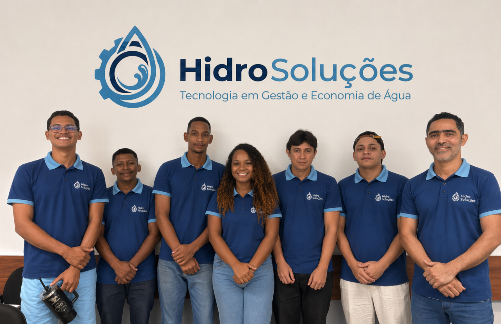

Na Hidro Soluções, acreditamos que a água é o recurso mais valioso do nosso planeta e que sua gestão inteligente é o pilar para um futuro sustentável. Somos uma empresa especializada em Tecnologia em Gestão e Economia de Água, unindo engenharia de precisão e inovação digital para transformar a maneira como empresas e condomínios interagem com esse recurso.
Proporcionar soluções tecnológicas de alta performance que reduzam o desperdício, otimizem custos operacionais e garantam a eficiência hídrica total para nossos clientes.
Combinamos o rigor da engenharia (representado pela nossa engrenagem) com a fluidez da inovação (simbolizada pela gota).
Diferenciamo-nos pelo uso de tecnologia de ponta. Não entregamos apenas serviços; entregamos dados, previsibilidade e segurança hídrica. Nossa equipe trabalha para que cada gota seja contabilizada e cada investimento retorne em forma de economia e responsabilidade social.
Conheça um de nossos serviços em Gestão de Água
Conhecer